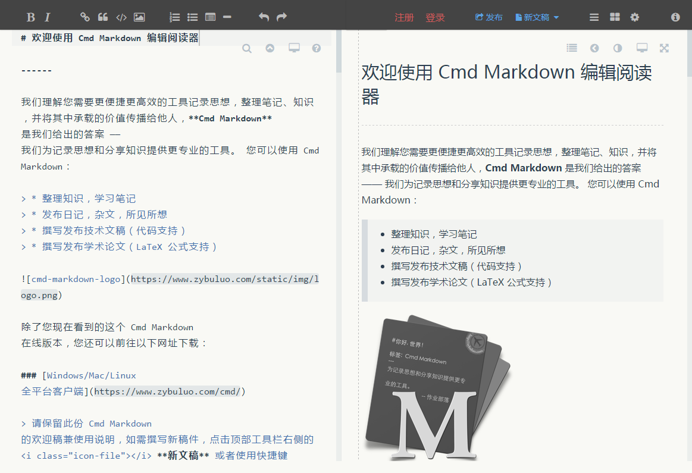
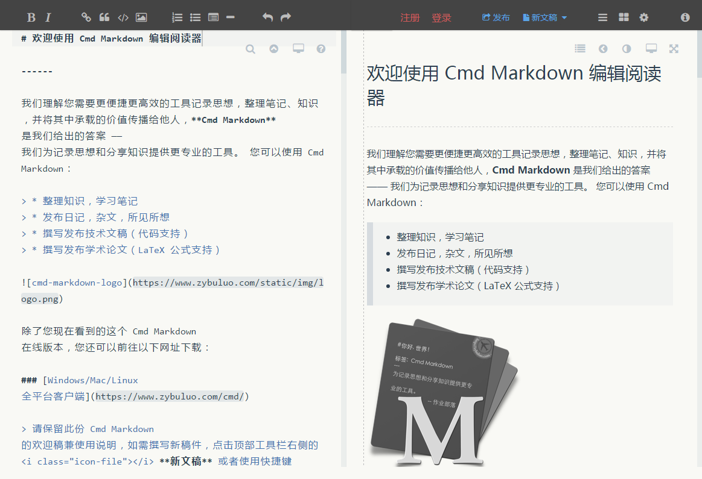

Cmd Markdown
主页: Cmd Markdown
平台: Windows OSX Linux Web
费用: 免费
技术: Web
介绍
Cmd Markdown 是一款使用 Web 技术开发的，全面且强大的 Markdown 编辑器。它拥有实时预览、离线编辑、智能同步、发布共享等功能，并提供了 Web 版和 Windows、OSX、Linux 平台的客户端，体验很棒。
截图

主页: Cmd Markdown
平台: Windows OSX Linux Web
费用: 免费
技术: Web
Cmd Markdown 是一款使用 Web 技术开发的，全面且强大的 Markdown 编辑器。它拥有实时预览、离线编辑、智能同步、发布共享等功能，并提供了 Web 版和 Windows、OSX、Linux 平台的客户端，体验很棒。
